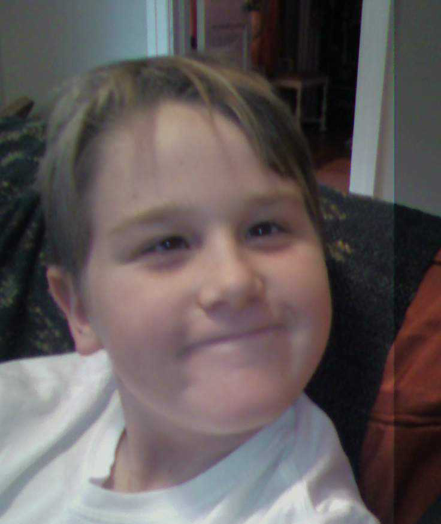

So what is all of this?
When I was eleven, I contracted Lyme disease—disseminated pediatric Lyme encephalitis, affecting the central nervous system. I had a headache and my eyes crossed. Luckily, I got fast treatment for it, and it went away within a few months.
When I was a junior in high school, however, I decided to stop taking my antibiotics. One of the craziest things to ever happen to me was psychosis due to the brain inflammation. Over the course of a few months, it was like I had entered into a fictional world divergent from reality. This website attempts to document that experience, something that was unsettling, scary, almost indescribable.
This website is set up as a linear experience, and involves clicking through a series of pages. Here is an index of all of the pages:
Index
- Complex neural tangle
- Art book
- Magical realism story
- Simple neural tangle
- Falling game portfolio
- Text message poem
The first page engages the viewer immediately by having to draw a loop. This illustrates one of the biggest new fears that I had, of being so closed off and alone. I made a drawing of it as well, which is shown on a few pages. For this first page, you have to draw over fifteen nodes; this is subverted on a later page. I used the HTML canvas to do this part.

The next page shows a bunch of artwork. I was in an art class at the time, and so had a lot of artwork, including the neural tangle one. I remember my hands shaking and barely being able to hold a pencil. Drawing all of those was very difficult. There is also a huge wall of text making up the background. This text is constantly being "shifted" by javascript, so that it loops back on itself. The text was created by taking a poem (to be looked at further in another section) as well as some other text, and then putting it through various scramblers and glitchers. Hovering the mouse over the images will change them to a glitched GIF, made with Photomosh.
The next page shows a magical realism story that I wrote for English class my sophomore year, a year before my psychosis. For some reason, I got it into my head that it had some deep symbolism that I had subconsciously put into it a year prior, and thus felt the need to analyze it and write a bunch of notes in the margins. Clicking on the story changes it to the annotated version, and clicking on it once more covers it in blood and advances to the next page. I used to painstakingly go over every written word, so maybe it's not that far-fetched that it might have some kind of meaning.
The next page returns to the loop drawing “game” (a.k.a. the brain drawing game). This time, you have a limited number of neurons to draw the loop. This illustrates how I feel my brain to be limited, stuck in a loop. I consider around this moment to be the pinnacle of the experience created by this project.
The limited neurons game changes fittingly to the next page, which shows a bunch of GIFs of games I made when I was a kid. I had a terrifying epiphany, which I hadn’t even noticed before, that pretty much all these games were the same thing: randomly falling objects coming from one side of the screen. It kind of freaked me out, though a friend did say, "It's just your style!"
And finally, there is the poem, which is displayed as a text message. I am quite proud of how I coded the text message with HTML. I chose this format because it illustrates how no one really understands, or is able to respond to, some of the issues that I have had, which makes me feel alone about it. As a matter of fact, that’s why I put so much time into the draw-a-loop game - to make people look at the concept for more than 5 seconds. I put together this poem based on notes that I had written and scribbled on loose leaf pages. The poem can be skipped and you can get the link to this page by saying "bye".
Almost all of the assets on this website are my own. Freesound.org was useful for a few sound effects. This is my own font, made from my handwriting. The "I had a nightmare" song from the art book is from a music video that my dad and I made. Here are all of the "nightmare" videos that we made (GIFs of which are featured on some pages to emphasize that creepy feeling).
Thank you for looking through my website!